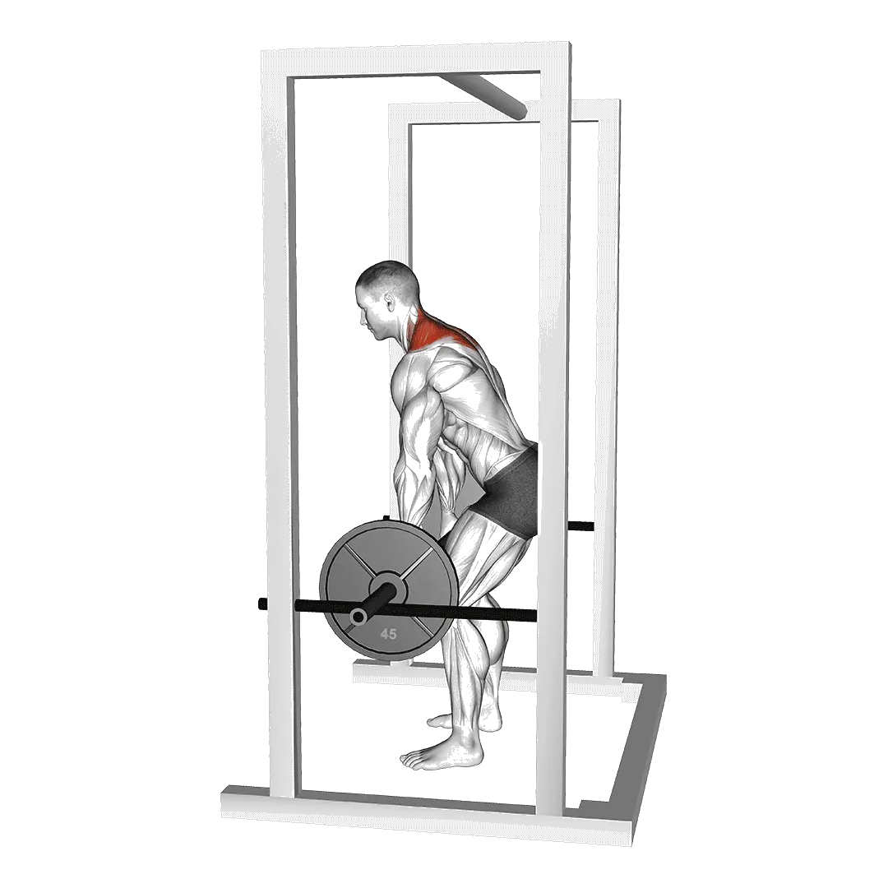

中級平均重量
一般中級訓練者的參考值。
男性
354 lb
女性
146 lb
槓鈴高翻聳肩平均重量 [1RM]
| 等級 | ||
|---|---|---|
| 初學者 | 108 lb | 34 lb |
| 初級者 | 211 lb | 79 lb |
| 中級者 | 354 lb | 146 lb |
| 進階者 | 534 lb | 233 lb |
| 菁英 | 740 lb | 335 lb |
註：這些標準是以一般訓練者的 1RM 為基準估算。體重、年齡等個人因素都可能造成差異。詳細資料請參考下方表格。
槓鈴高翻聳肩力量標準(lb)
男性按體重(lb)資料 [1RM]
| 體重 | 初學者 | 初級者 | 中級者 | 進階者 | 菁英 |
|---|---|---|---|---|---|
| 110 | 24 | 71 | 149 | 255 | 382 |
| 120 | 36 | 92 | 179 | 293 | 429 |
| 130 | 50 | 114 | 208 | 331 | 474 |
| 140 | 65 | 136 | 238 | 368 | 519 |
| 150 | 81 | 158 | 267 | 404 | 561 |
| 160 | 97 | 181 | 296 | 440 | 603 |
| 170 | 114 | 203 | 325 | 474 | 643 |
| 180 | 131 | 226 | 353 | 508 | 683 |
| 190 | 148 | 248 | 381 | 541 | 721 |
| 200 | 165 | 270 | 408 | 574 | 758 |
| 210 | 182 | 292 | 435 | 605 | 795 |
| 220 | 199 | 314 | 461 | 636 | 830 |
| 230 | 217 | 335 | 487 | 667 | 865 |
| 240 | 234 | 356 | 512 | 696 | 899 |
| 250 | 251 | 377 | 537 | 726 | 932 |
| 260 | 268 | 398 | 562 | 754 | 964 |
| 270 | 284 | 418 | 586 | 782 | 996 |
| 280 | 301 | 438 | 610 | 809 | 1026 |
| 290 | 317 | 458 | 633 | 836 | 1057 |
| 300 | 334 | 478 | 656 | 863 | 1086 |
| 310 | 350 | 497 | 679 | 889 | 1116 |
男性按年齡資料 [1RM]
| 年齡 | 初學者 | 初級者 | 中級者 | 進階者 | 菁英 |
|---|---|---|---|---|---|
| 15 | 92 | 179 | 301 | 454 | 630 |
| 20 | 106 | 205 | 345 | 520 | 721 |
| 25 | 108 | 211 | 354 | 534 | 740 |
| 30 | 108 | 211 | 354 | 534 | 740 |
| 35 | 108 | 211 | 354 | 534 | 740 |
| 40 | 108 | 211 | 354 | 534 | 740 |
| 45 | 103 | 200 | 336 | 506 | 702 |
| 50 | 96 | 187 | 315 | 475 | 659 |
| 55 | 89 | 173 | 291 | 440 | 609 |
| 60 | 81 | 158 | 266 | 401 | 556 |
| 65 | 74 | 143 | 240 | 362 | 503 |
| 70 | 66 | 128 | 216 | 325 | 451 |
| 75 | 59 | 115 | 193 | 291 | 403 |
| 80 | 53 | 103 | 172 | 260 | 361 |
| 85 | 47 | 92 | 154 | 233 | 323 |
| 90 | 43 | 83 | 139 | 210 | 291 |
女性按體重(lb)資料 [1RM]
| 體重 | 初學者 | 初級者 | 中級者 | 進階者 | 菁英 |
|---|---|---|---|---|---|
| 90 | 13 | 43 | 92 | 160 | 243 |
| 100 | 18 | 50 | 103 | 174 | 260 |
| 110 | 22 | 58 | 113 | 187 | 276 |
| 120 | 26 | 64 | 123 | 200 | 290 |
| 130 | 31 | 71 | 132 | 211 | 305 |
| 140 | 35 | 78 | 141 | 223 | 318 |
| 150 | 39 | 84 | 149 | 233 | 331 |
| 160 | 43 | 90 | 157 | 243 | 343 |
| 170 | 48 | 96 | 165 | 253 | 354 |
| 180 | 52 | 102 | 173 | 262 | 365 |
| 190 | 56 | 108 | 180 | 271 | 376 |
| 200 | 60 | 113 | 187 | 280 | 386 |
| 210 | 64 | 118 | 194 | 288 | 396 |
| 220 | 67 | 124 | 201 | 297 | 405 |
| 230 | 71 | 129 | 207 | 304 | 415 |
| 240 | 75 | 134 | 214 | 312 | 423 |
| 250 | 78 | 139 | 220 | 319 | 432 |
| 260 | 82 | 143 | 226 | 327 | 440 |
女性按年齡資料 [1RM]
| 年齡 | 初學者 | 初級者 | 中級者 | 進階者 | 菁英 |
|---|---|---|---|---|---|
| 15 | 29 | 67 | 124 | 198 | 285 |
| 20 | 33 | 77 | 142 | 227 | 326 |
| 25 | 34 | 79 | 146 | 233 | 335 |
| 30 | 34 | 79 | 146 | 233 | 335 |
| 35 | 34 | 79 | 146 | 233 | 335 |
| 40 | 34 | 79 | 146 | 233 | 335 |
| 45 | 32 | 75 | 138 | 221 | 318 |
| 50 | 30 | 70 | 130 | 207 | 298 |
| 55 | 28 | 65 | 120 | 192 | 276 |
| 60 | 26 | 59 | 110 | 175 | 252 |
| 65 | 23 | 54 | 99 | 158 | 228 |
| 70 | 21 | 48 | 89 | 142 | 204 |
| 75 | 19 | 43 | 79 | 127 | 183 |
| 80 | 17 | 39 | 71 | 114 | 163 |
| 85 | 15 | 35 | 64 | 102 | 146 |
| 90 | 13 | 31 | 57 | 92 | 132 |
註：一般健身房的標準槓鈴通常為44 lb。
目標肌群
| 分類 | 肌群 |
|---|---|
| 主動肌 | 斜方肌 |
| 輔助肌群 | 闊背肌 |
| 穩定肌群 | 三角肌, 腹外斜肌 |
| 握力 | 前臂屈肌群 |
用 Shiba App 記錄與分析
集中查看重量、次數與進步變化。
表格說明
| 等級 | 說明 | 分布 |
|---|---|---|
| 初學者 | 掌握正確動作，並持續訓練至少 1 個月。 | 後 5% |
| 初級者 | 持續規律訓練至少 6 個月。 | 前 80% |
| 中級者 | 持續規律訓練至少 2 年。 | 前 50% |
| 進階者 | 持續規律訓練超過 5 年。 | 前 20% |
| 菁英 | 針對該動作專項訓練超過 5 年。 | 前 5% |